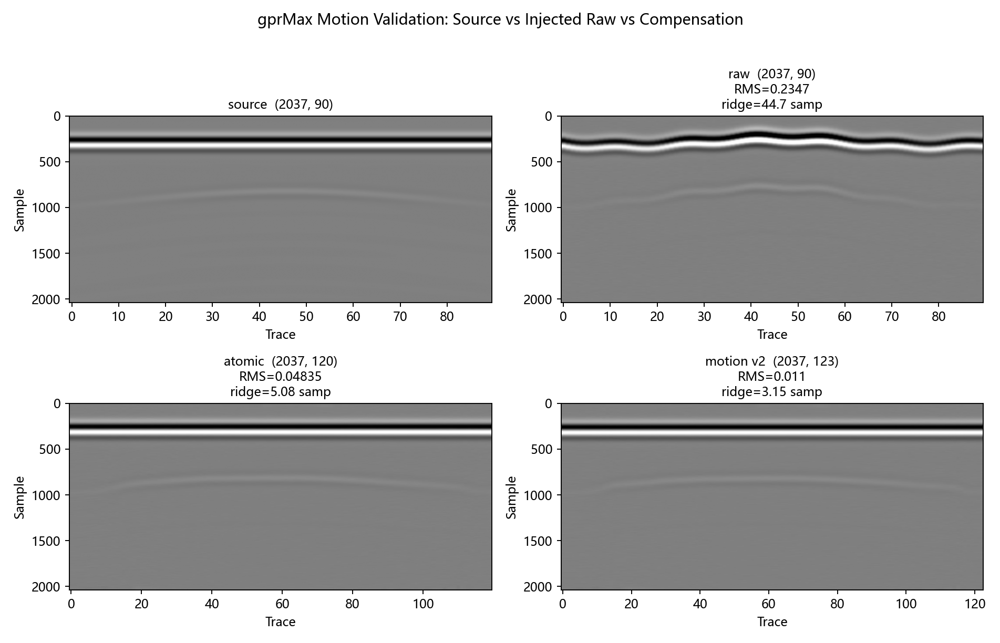

Raw 3D 预览

本报告使用 gprMax 地下波场作为 source，在 MyGPR 侧注入可控 UAV 运动扰动，并比较四原子补偿链与统一 Motion V2 的恢复效果。生成时间：2026-05-19 20:39:52
验证目标是软件链路和运动补偿恢复能力，不把该合成运动扰动视为真实外业地质结论。
四原子链先更新姿态/APC 足迹，再执行等距道距重采样，最后做高度时移和振幅归一，避免后续姿态更新破坏 speed compensation 的 trace axis。
| Route | Steps | 说明 |
|---|---|---|
| Atomic | trajectory_smoothing -> motion_compensation_attitude -> motion_compensation_speed -> motion_compensation_height | 用于 ablation、教学展示和分项验证。 |
| Unified | motion_compensation_v2 | 推荐主线入口，统一输出 warnings、quality_flags 和 trace metadata。 |
改善 RMS 越低越接近未注入运动扰动的 gprMax source；道距 CV 越低表示航迹重采样越稳定。
| Metric | Value | Interpretation |
|---|---|---|
| Raw vs Source RMS | 0.23467 | 运动扰动注入后与原始 gprMax 的差异 |
| Atomic vs Source RMS | 0.0483498 | 四原子补偿后残差 |
| Motion V2 vs Source RMS | 0.0110029 | 统一 V2 补偿后残差 |
| Trace Spacing CV Before | 0.251014 | 补偿前道距不均匀程度 |
| Trace Spacing CV Atomic | 0.0353756 | 四原子补偿后道距不均匀程度 |
| Trace Spacing CV V2 | 0.0358158 | V2 补偿后道距不均匀程度 |
| Target Apex Error Raw | 48 | 补偿前目标顶点偏差 / sample |
| Target Apex Error Atomic | 5 | 四原子补偿后目标顶点偏差 / sample |
| Target Apex Error V2 | 0 | V2 补偿后目标顶点偏差 / sample |
| Target ROI Preservation Atomic | 1.11315 | 四原子目标 ROI 能量保持 |
| Target ROI Preservation V2 | 1.01829 | V2 目标 ROI 能量保持 |
统一灰度范围，对比 gprMax source、motion-injected raw、四原子补偿、Motion V2。

用于检查运动注入和补偿后的波形结构是否仍可解释。

检查补偿前后航迹、剖面带和高度变化是否进入可视化链路。

四原子链中的 speed compensation 也会执行等距道距重采样；atomic trace 数变化是预期结果，不是 shape 错误。
Motion V2 可能改变 trace 数，这是等距道距重采样的预期结果，不应被误判为 shape 错误。
这些信息用于判断当前证据能否进入论文/组会结论。